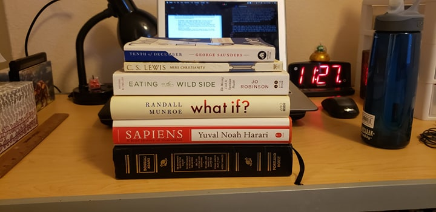
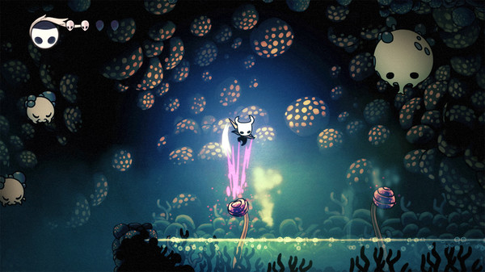

What Did I Do This Summer?
In which I try to explain that gap in my résumé.
August 25, 2019

Among other things, I went to Montana and my little brother and I pretended to be lynels.
I’ve been told that, when a potential employer sees a gap in a person’s résumé, they tend to want to know what was going on during that time. I was hoping that I would be able to say that I spent this summer writing fiction and blog posts, but anyone looking through this site (or my GitHub) may have noticed a large absence of activity in June and July. So what exactly was I spending my time on all summer?
Classes

Does anyone know how to decrease the difficulty in this game?
I took three classes online through Purdue this summer. Each class was a semester’s worth of content crammed into either eight weeks or four weeks, so the workload was fairly intense, even with only three of them – hence the lack of writing in June and July. Specifically, I took:
- ENGL 420: Business Writing. A course all about writing in a business context, whether that’s resumes and cover letters or white papers and press releases. I won’t pretend I was ever very excited to work on this course, but I’m still glad I took it. I could tell I was due for some more practice writing things other than lab reports.
- POL 327: Global Green Politics. This course was extremely interesting and pretty depressing. Each week had assigned readings covering two different topics in international environmental politics, from population growth to the ecological justice. There was also a fair amount of writing. Again, I think this sort of thing – reading and writing things outside of an engineering context – is something I really needed practice in. So I’m grateful for this course, even if it did make me pretty pessimistic about the fundamental unsustainability of capitalism.
- PHIL 150: Logic. This course was just fun. It was basically just solving puzzles every day for four weeks. Like, we learned the formal rules behind the puzzles and why different solutions worked, but the homeworks felt like playing sudoku. It was an absolute blast.
Books
The greatest argument against e-books is that you can't stack them up on your desk like this to look all smart.
Every summer, I tell myself I’m going to read more, and every summer, it doesn’t happen. But this time it did! I read more books in the last three months than I had read in at least three years before that. I don’t want this post to just turn into me rambling on and on about the books I read, but in case you’ve been looking for something to read, I can give a brief two-sentence summary of what each book is and what I thought of it.
- The Hitchhiker's Guide "trilogy" by Douglas Adams. A five-book science fiction “trilogy” by the comedic British writer Douglas Adams. The first three books are fantastic, the fourth is different but still good, and the fifth is pretty skippable.
- Sapiens by Yuval Noah Harari. A “brief history of humankind” from what I would describe as an anthropological perspective, all the way from pre-history to the modern day. Very well-written and full of information that will challenge your previously-held conceptions about humanity and our societies.
- What If? by Randall Munroe. A former NASA engineer and creator of the webcomic XKCD presents scientifically-researched answers to ridiculous questions, such as “What would happen if you pitched a baseball at near the speed of light?”. The book is a beautiful balance of education and fun, with hilarious illustrations to boot.
- Eating on the Wild Side by Jo Robinson. A series of walks through the agricultural history of each type of modern-day produce, with a particular focus on what nutritional benefits have been lost and how they can be regained. It leans a bit too hard on some iffy buzzwords like “antioxidant” and “pesticide,” but the history parts are really interesting.
- Mere Christianity by C.S. Lewis. A fairly short book in which C.S. Lewis tries to convince you that Christianity is true and then shares some thoughts on Christian morality and theology. The writing is beautiful, which almost makes up for how poor most of the actual arguments are.
- Tenth of December by George Saunders. A collection of short fiction stories by a modern American writer. Funny in some parts, sad in others, but consistently engaging and thought-provoking.
Video Games
Seriously, just look at how gorgeous this game is! (Source: Hollow Knight Steam page)
There seems to be a general idea out there that playing video games as a hobby is somehow juvenile or shameful. You might hear people sneer at someone who “just sat around a played video games all weekend,” but you’ll rarely hear the same disdain for to someone who spends their free time reading books. I reject that. To me, video games are a form of art, a unique way to entertain, invoke emotions, and prompt reflection just like books or movies. Sure, there are a lot of games that are just trying to give you a fun time and that’s it – but there are plenty of kitschy romance novels or cliché fantasy stories doing the exact same thing. So, yeah, I did play through
- Hollow Knight. A grueling yet beautiful Metroidvania about a nail-wielding bug exploring an ancient underground kingdom. There are a few places where the difficulty feels unreasonable, but the game does so many other things so well that it’s worth pushing through.
- Astroneer. Think Minecraft, but less blocky and also and you’re in space. Pretty, relaxing, and delightfully fun.
- Child of Light. A sort of JRPG platformer with an interesting art style. Definitely starts getting repetitive partway through, but ends up providing what I felt was a poignant, satisfying story.
- Minit. A very small game in which you die and return to your starting location every 60 seconds. Cute, clever, and short enough to be finished in a few hours (I played through the entire game in a single morning when I came down with a nasty cold in May).
- Slay the Spire. A funky hybrid between deck-building games and rogue-likes in which you repeatedly try to fight your way to the top of a tower. Very well-made and pretty addicting – it’s one of those games I feel like I’ll always be able to go back to, even if I stopped playing it for a few months.
- The Gardens Between. A fairly short indie game where you solve puzzles by turning time backward and forward. The puzzles are smart, the art is gorgeous, and it all tells a story in a very unique way.
- The Messenger. Starts out as a fun, simple platformer and then suddenly turns into an elaborate time-travelling Metroidvania. Really starts to drag on near the end, but definitely worth playing at least part of.
- Super Smash Bros. Ultimate. The latest entry in Nintendo’s series of fighting games features every character from previous games, plus a host of new fighters. Can be intimidating to newcomers, but there’s so many different game modes that pretty much everyone should be able to find something fun to do.
Other Stuff
I think this one is titled "The Execution".
I did a variety of other things that didn’t feel like they warranted their own section, but still felt worth mentioning as important parts of my summer.
- This website. I’d been sort of toying with this website here and there for a while, but I didn’t really start putting in a lot of work until the start of this summer. I built all the parts I wanted, polished up the styling, threw in some Javascript and CSS media queries to make it feel more responsive, and finally actually got a URL and hosted it. It may seem like a pretty trivial accomplishment for actual experienced developers, but as someone with very little experience in web dev, I’m pretty proud of what I’ve done here.
- Tweet Simulator. My first class didn’t start until partway through June, so I had a lot of free time at the start of the summer. I devoted some of that free time to a personal programming project: my Tweet Simulator! It’s a web app that uses tweepy (a Python library) to read through a person’s tweets and then uses markovify (another library) to attempt to write its own tweets in that person’s “voice.” Granted, I was only able to work on it for a couple weeks, and I still haven’t had time to actually get it hosted (it’s going to happen, I promise!), but it still felt worth mentioning.
- Podcasts. Of course I listened to a lot of podcasts this summer – mainly while exercising or doing yard work. I’m actively listening to fifteen different shows these days, but you can read about some of my favorites here.
- Baking. One of the great things about living at home for the summer was that I didn’t have to buy my own groceries! This meant I had plenty of opportunities to try out some new recipes: a savory cheese souffle, a double stuft Oreo cake, and a cute lil’ molten chocolate cake for my birthday.
- Friends and family. Honestly, of all the things I did this summer, this is the one I’m most happy about. One of my motivations between going home for four months instead of trying to get an internship somewhere was that I wanted to spend some time with my family and my friends in South Bend before I graduate and go off to who knows where. I got to catch up with some high school friends, play video games with my little siblings, help my parents cook dinner, and watch season 3 of Stranger Things with my fiancé and their family. It was really, really great.
So, if you’re wondering why there’s a big ol’ gap in my résumé from May to August 2019, that’s why. Long story short, I was just sort of doing my own thing and enjoying life for a few months before I graduate and get a full-time job and never get summers off again. And looking back now, I have to say, that was absolutely a good call.